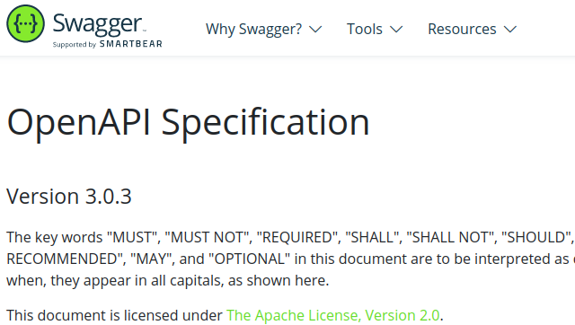
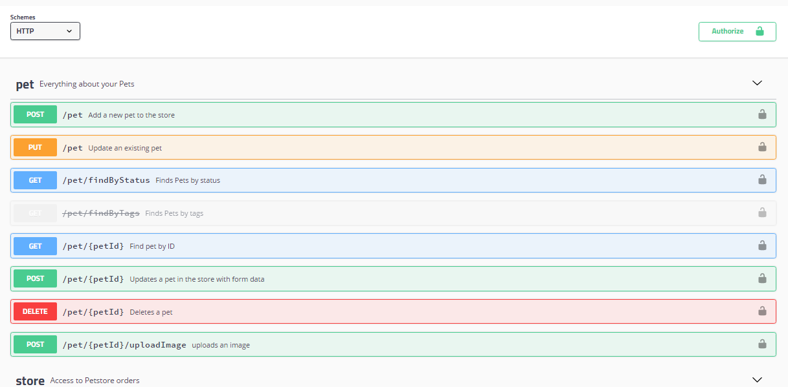
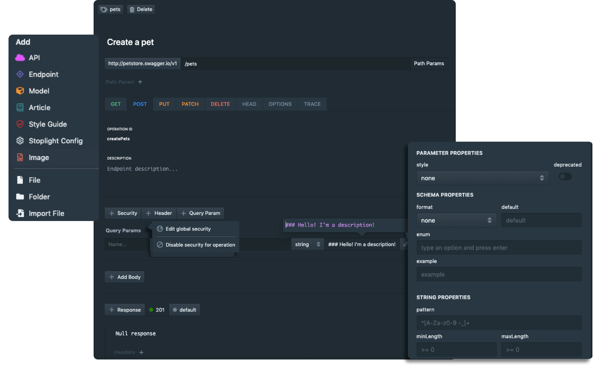
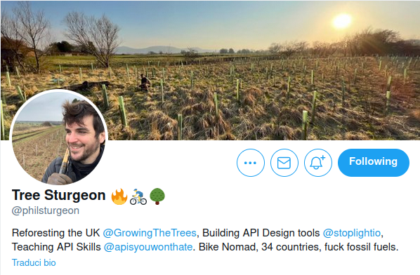

API contracts
Leveraging OpenAPI
during API development
Alessandro Lai / @AlessandroLai
sfday @ 127.0.0.1 - May 13th 2021, Online
Who am I?
- Alessandro Lai
- Team lead developer @ Facile.it
- @Jean85
- @AlessandroLai
- PHP UG Milan Coordinator
- PHP-FIG Secretary
APIs: the language of web apps
APIs are the "common language" of web development
- Frontend to backend
- Mobile to backend
-
Between different applications
(microservices) -
Between different companies
(SaaS, API monetization...)
Working between projects
If you don't have a monorepo, you'll need a way to describe
what your APIs does and how it does it
Design by contract ™
Design by contract is an approach for designing software.From Wikipedia
[...]
software designers should define formal, precise and verifiable
interface specifications for software components,
[...]
all client components that invoke
an operation on a server component will meet the preconditions
[...]
[Otherwise] the inverse approach is taken, meaning that the server component
tests that all relevant preconditions hold true.
Which language to use? Which format?
OpenAPI 3
OpenAPI specification
OpenAPI (the old Swagger)
 Swagger UIBeware, here be YAML
openapi: 3.0.3
info:
title: Test API for Facile.it
version: '1.0'
description: Description of the APIs
contact:
name: Alessandro Lai
servers:
- url: 'https://openapi.facile.it'
description: Prod
paths:
/api/test:
get:
summary: Get the test information
responses:
'200':
description: OK
content:
application/json:
schema:
type: object
properties:
# ...StopLight (Studio)
-
Prism
https://github.com/stoplightio/prism
Mock server -
Spectral
https://github.com/stoplightio/spectral
OpenAPI spec validation
Live demo!
Credits to this guy...
- Core team of CodeIgniter
- PyroCMS founder
- PHP Town Hall podcast host
- PHP The Right Way core contributor
- Author of "API you won't hate"
- ... and now works at Stoplight.io
OpenApi.tools
The "documentation" pitfall
- How do we synchronize code & spec?
- What's stopping us from making the spec outdated?
-
Just committing your OpenAPI Spec is not enough:
it's the same as having too many comments in the code
The "magic" approach
NelmioApiDocBundle/**
* List the rewards of the specified user.
*
* This call takes into account all confirmed awards, but not pending or refused awards.
*
* @Route("/api/{user}/rewards", methods={"GET"})
* @SWG\Response(
* response=200,
* description="Returns the rewards of an user",
* @SWG\Schema(
* type="array",
* @SWG\Items(ref=@Model(type=Reward::class, groups={"full"}))
* )
* )
* @SWG\Parameter(name="order", in="query", type="string", description="The field used to order rewards")
* @SWG\Tag(name="rewards")
* @Security(name="Bearer")
*/
public function fetchUserRewardsAction(User $user)
{
The "magic" approach
NelmioApiDocBundleOA Spec Code
DANGEROUS:
code changes can accidentally alter the API contract!
A better approach:
involving the spec in the code
OA Spec Code
All code can be seen in action at https://github.com/Jean85/symfony-openapi-exampleThe validator
thephpleague/openapi-psr7-validatorcomposer require league/openapi-psr7-validator
Http Foundation VS PSR-7
If you use Flex, the newpsr7-pack
(see
symfony/recipes#911)
composer require psr7-pack
# same as
composer require symfony/psr-http-message-bridge nyholm/psr7services:
Symfony\Bridge\PsrHttpMessage\Factory\PsrHttpFactory:
autowire: true
autoconfigure: trueOR
sensio/framework-extra-bundle < 6.0sensio_framework_extra:
psr_message:
enabled: trueSymfony service definition
$validatorBuilder = (new \League\OpenAPIValidation\PSR7\ValidatorBuilder)
->setCache(new Psr16(...))
->fromYamlFile($yamlFile);
$validatorBuilder->getServerRequestValidator();
$validatorBuilder->getResponseValidator();services:
_defaults:
autowire: true
autoconfigure: true
League\OpenAPIValidation\PSR7\ValidatorBuilder:
calls:
- ['fromYamlFile', ['%kernel.project_dir%/openapi.yaml']]
# cache pool from framework.cache.pools
- ['setCache', ['@cache.openapivalidator']]
League\OpenAPIValidation\PSR7\RequestValidator:
factory:
- '@League\OpenAPIValidation\PSR7\ValidatorBuilder'
- 'getRequestValidator'Using the validator in tests (1/2)
class OpenApiClient extends KernelBrowser
{
protected function doRequest($request): Response
{
if ($this->validateRequest) {
$psr7request = $this->psrHttpFactory->createRequest($request);
$this->requestValidator->validate($psr7request);
}
$pathFinder = new PathFinder(
$this->responseValidator->getSchema(),
$request->getUri(),
$request->getMethod()
);
$matchingOperations = $pathFinder->search();
if (count($matchingOperations) !== 1) {
throw new \RuntimeException(
"Unexpected number of matches for {$request->getUri()}: " .
count($matchingOperations)
);
} // ...Using the validator in tests (2/2)
// (continue)
try {
$this->responseValidator->validate(
$matchingOperations[0],
$this->psrHttpFactory->createResponse($response)
);
} catch (\... $exception) {
// You should catch and decorate the exceptions
// to make the failures "prettier"
}
return $response;
}Using the spec in production!
<?php
declare(strict_types=1);
use League\OpenAPIValidation\PSR7\RequestValidator as Psr7RequestValidator;
use Symfony\Bridge\PsrHttpMessage\Factory\PsrHttpFactory;
use Symfony\Component\HttpKernel\Event\ControllerEvent;
class RequestValidatorEventListener
{
public function __construct(
private PsrHttpFactory $psrHttpFactory,
private RequestValidator $requestValidator,
) {}
public function onKernelController(ControllerEvent $event): void
{
$psr7request = $this->psrHttpFactory->createRequest($event->getRequest());
$this->requestValidator->validate($psr7request);
}
}Using validation errors as responses
<?php
use League\OpenAPIValidation\PSR7\Exception\ValidationFailed;
use Symfony\Component\HttpFoundation\JsonResponse;
class ErrorEventListener
{
public function onKernelException(ExceptionEvent $event): void
{
// ...
$event->setResponse(
$this->createFromThrowable($event->getThrowable())
);
}
private function createFromThrowable(\Throwable $error): JsonResponse
{
if ($error instanceof ValidationFailed) {
return new JsonResponse([/* ... */], Response::HTTP_BAD_REQUEST);
}
// ...
}
}A suggestion: API Problem
RFC 7808 - Problem Details for HTTP APIsHTTP/1.1 403 Forbidden
Content-Type: application/problem+json
Content-Language: en
{
"type": "https://example.com/probs/out-of-credit",
"title": "You do not have enough credit.",
"detail": "Your current balance is 30, but that costs 50.",
"instance": "/account/12345/msgs/abc",
// arbitrary extended properties:
"balance": 30,
"accounts": ["/account/12345", "/account/67890"]
}PHP API Problem
crell/api-problemcomposer require crell/api-problemuse Crell\ApiProblem\ApiProblem;
use Symfony\Component\HttpFoundation\JsonResponse;
use Symfony\Component\HttpFoundation\Response;
$problem = new ApiProblem("You do not have enough credit.", "http://example.com/probs/out-of-credit");
// Defined properties in the API have their own setter methods.
$problem
->setDetail("Your current balance is 30, but that costs 50.")
->setInstance("http://example.net/account/12345/msgs/abc");
$problem['balance'] = 30;
$problem['accounts'] = [
"http://example.net/account/12345",
"http://example.net/account/67890"
];
return new JsonResponse($problem->asArray(), Response::HTTP_BAD_REQUEST);Pitfalls and limitations
-
Tools are constraints
Penetration of new OAS version support is not immediate -
Versioning issues are still there to be handled
... but you could leverage OAS to make it less painful
Thanks!
Please rate my talk on Joind.in: https://joind.in/talk/39cea
Questions?
Contacts
- https://alessandrolai.dev (slides & other talks here)
- alessandro.lai85@gmail.com
- alessandro.lai@facile.it (we are hiring!)
- @Jean85
- @AlessandroLai